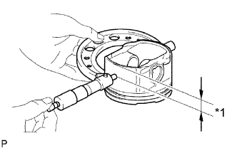
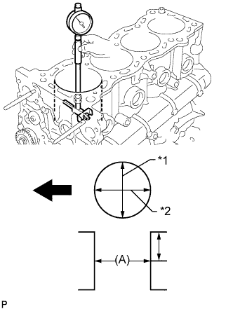

БЛОК ЦИЛИНДРОВ > РЕМОНТ |
| 1. ОТВЕРСТИЕ ЦИЛИНДРА |
Приготовьте 4 новых поршня ремонтного размера.
|  |
Измерьте микрометром диаметр поршня в плоскости, перпендикулярной осевой линии поршня, на заданном расстоянии от его конца.
| *1 | Расстояние |
Рассчитайте, насколько необходимо расточить каждый цилиндр, следующим образом.
Расточите и притрите цилиндры в соответствии с рассчитанными размерами.
Измерьте диаметр цилиндра с помощью нутромера и рассчитайте допуск на притирку.
Обработайте отверстие цилиндра, используя рассчитанное значение.
|  |
С помощью нутромера измерьте диаметр цилиндра.
| *1 | Направление тяги |
| *2 | Осевое направление |
 | Передняя сторона |